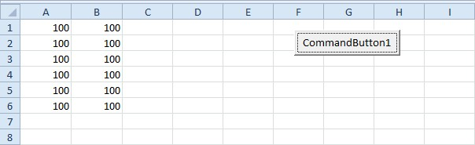
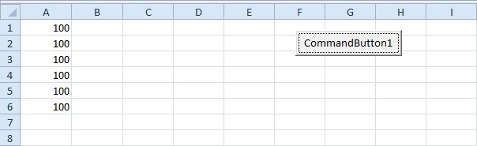
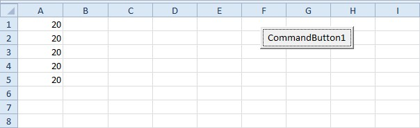

Perulangan: For Next dan Do While
Loop mengulangi sekumpulan perintah. For cocok bila jumlah ulangan diketahui, Do While bila bergantung pada syarat.
For i = 1 To 10
Cells(i, 1).Value = i
Next iLangkah praktik
- For i = 1 To 10 mengulang 10 kali dengan i = 1, 2, ..., 10.
- Cells(baris, kolom) menunjuk sel berdasarkan angka.
- Loop bersarang (di dalam loop) dipakai untuk mengisi tabel dua dimensi.
- Do While syarat ... Loop mengulang selama syarat benar; pastikan syarat suatu saat menjadi salah.
Tips
Loop tanpa akhir dapat dihentikan dengan Ctrl+Break.
Tangkapan layar praktik


